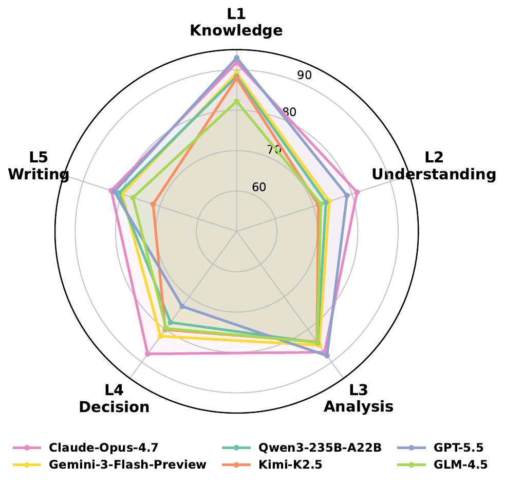
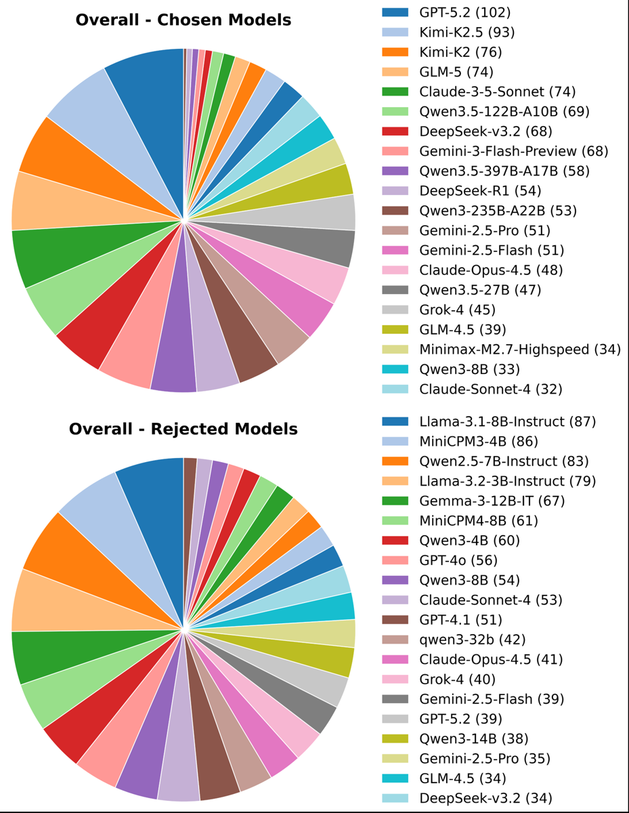
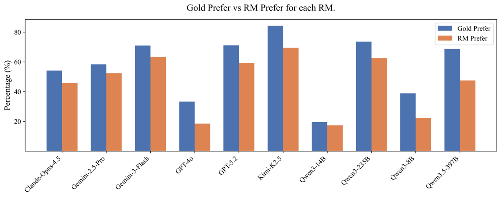

TL;DR : premier benchmark de reward models juridiques vérifié par des humains — 1 331 paires de préférences chinoises sur 5 niveaux (knowledge / understanding / analysis / decision / writing), construites par scoring automatique guidé par rubriques puis validation par 5 juristes ; 38 RMs comparés ; les gros LLMs généralistes promptés dominent les RMs fine-tunés, et entraîner un RM juridique maison ne marche pas.
Claim principal, précisément : sur 1 331 paires, les 14 premiers systèmes du classement sont des LLMs généralistes promptés (Claude-Opus-4.7, 86.85 %), le meilleur RM fine-tuné arrive 15ᵉ (Qwen3-Nemotron-8B-BRRM, 78.25 % ; meilleur DisRM Skywork-Reward-V2-Qwen3-8B, 78.14 %) [Tab. 3] ; ajouter la réponse de référence dans l'input du juge gagne +2.78 à +8.19 pts selon le modèle [Tab. 4] et +6.57 pts sur Qwen3-8B [Tab. 9] ; entraîner un RM sur 39 K paires juridiques ne dépasse pas le simple prompt+référence (GenRM 78.96 vs prompt+ref 82.26 sur Qwen3-8B) [Tab. 9].
Claim secondaire — le seul qui réponde à la question « ce classement prédit-il quelque chose en aval ? » : corrélation de Spearman 0.9758 entre le rang sur LegalRewardBench et le gain en best-of-4 sur LawBench + LexEval, avec 10 RMs [§3.3.4 / Finding 7, Tab. 8]. ⚠️ Voir §7.0 : c'est du best-of-n sur 2×50 échantillons, pas du post-training.
Origine des tâches. Trois sources, requête par requête [§2.1] : (1) données de tâches juridiques in-house (majorité écrasante : ~33 des 41 types selon Tab. 11–12) ; (2) benchmarks existants — LawBench 1-1 (récitation d'article, 45), LawBench 3-4 et 3-5 (prédiction de peine, 69 + 68) ; (3) examens (Judicial Exam 24-25, 44 ; Master-of-Law Exam 24-25, 10) [Tab. 11]. Contrainte dure : chaque requête doit avoir une réponse de référence [§2.1]. Taxonomie des 5 niveaux inspirée de Bloom [§2.1, Tab. 1].
Pipeline, étape par étape [§2.1–2.3, App. C] :
1. Collecte de requêtes avec référence, priorité aux tâches « à critères d'évaluation relativement clairs » [§2.1].
2. Réécriture des requêtes (tous niveaux sauf L5 writing) pour imposer un format « analyse puis 最终输出： / Final Output: » — préserve la vérifiabilité de la réponse finale tout en exposant le raisonnement à l'annotation [§2.2].
3. Génération de candidats par ~30 modèles, >10 familles, 3B→1T, open + closed ; mode reasoning activé quand disponible [§2.2, Tab. 10].
4. Rubriques écrites par des annotateurs juristes à partir de la référence + des exigences de tâche + connaissances de fond [§2.3].
5. Scoring automatique : règles pour les tâches vérifiables, juge LLM sinon (détail en §3).
6. Sélection de paires : écart de score ≥ 10 % entre chosen et rejected, et le chosen doit être dans le top 50 % des candidats [§2.3].
7. Vérification humaine paire par paire contre les rubriques ; on ne garde que les paires où l'humain confirme la préférence automatique [§2.3].
Volume. 1 331 paires, 41 types de tâches [§2.4, App. B]. Par niveau [Tab. 2] : L1 306, L2 228, L3 377, L4 296, L5 124. Longueurs moyennes (caractères, dataset chinois) : requête 1 394.7 en moyenne, mais 234.5 en L1 et 6 355.7 en L5 ; chosen 642.6 ; rejected 482.0.
⚠️ Confound de longueur non traité : le chosen est plus long que le rejected à tous les niveaux [Tab. 2], avec un écart marqué en L4 (648.4 vs 345.5, +88 %) et L3 (661.7 vs 446.2, +48 %). Aucune baseline triviale « la plus longue gagne » n'est rapportée. Pour un signal de reward, c'est exactement le biais qui se transforme en length hacking.
Distribution de difficulté. Pas de métrique de difficulté explicite. Proxy donné par la Fig. 2 : les réponses chosen viennent surtout de modèles frontier (GPT-5.2 102, Kimi-K2.5 93, Kimi-K2 76), les rejected de modèles moyens/petits (Llama-3.1-8B-Instruct 87, MiniCPM3-4B 86, Qwen2.5-7B-Instruct 83) [Fig. 2]. Aucun modèle ne dépasse ~7.7 % d'un côté → distribution diversifiée. ⚠️ Mais le critère « écart ≥ 10 % + chosen dans le top 50 % » exclut les quasi-égalités, c'est-à-dire précisément le régime dans lequel un RM opère pendant un RL (candidats issus de la même policy, écarts faibles). Le benchmark mesure donc la discrimination sur des paires faciles à moyennes d'une distribution inter-modèles, pas intra-policy.
Filtrage. Pas de filtrage par pass@k. Filtrage = seuils de score automatique (≥10 %, top 50 %) + accord humain [§2.3]. Côté entraînement [§4.1] : suppression des requêtes/références de mauvaise qualité, dédoublonnage par similarité contre LegalRewardBench pour éviter la fuite, réécriture en format « raisonne puis réponds », et plafonnement des QCM à <30 %.
Curriculum. Aucun (benchmark statique, pas d'entraînement en ligne).
Contamination / séparation train-test. La séparation est traitée côté données d'entraînement de RM (étape 2 du prétraitement §4.1). ⚠️ Rien n'est fait sur la contamination des items eux-mêmes : LawBench 1-1 / 3-4 / 3-5 et les examens judiciaires 24-25 sont publics et plausiblement dans le pré-entraînement des juges évalués. Cela touche moins le scoring de préférence que la génération de réponses, mais n'est ni mesuré ni discuté.
Données SFT/IFT avant RL. n.a. pour le benchmark. Pour §4 : 39 K paires de préférences (33 K examens in-house + 6 K LegalDelta), chosen/rejected = meilleure/pire de 6 réponses échantillonnées depuis deux modèles de base, scorées par GPT-5.2 en référence-based (Prompt 2, échelle 1–10) [§4.1].
Coût humain. 5 étudiants de master en droit chinois ; 560 heures-homme pour la seule vérification [App. C]. Rémunération « commensurate… reasonable hourly wage » sans chiffre [Ethics]. Le coût de construction des rubriques n'est pas isolé ; qui a écrit les rubriques (les mêmes 5 personnes ?) : non précisé.
Pas d'environnement RL : le « harness » est le protocole de jugement. Je le décris comme tel car c'est la pièce transférable.
Observation du juge. Pour les General GenRM : prompt pairwise standardisé (Prompt 5, recopié en §3) contenant la requête juridique + réponse A + réponse B, et — dans le réglage « Ref » — la réponse de référence [§3.3.1]. Les réponses candidates contiennent raisonnement + Final Output: [§2.2]. Les Fine-tuned GenRM sont évalués avec leur propre template natif [§3.1, App. D]. Les Fine-tuned DisRM reçoivent la paire (instruction, réponse) sans prompt d'évaluation, scorent chaque réponse indépendamment, et la mieux scorée est la préférence [§3.1, App. D].
⚠️ Asymétrie d'input assumée mais lourde de conséquences : les DisRM ne peuvent pas recevoir la référence ni raisonner. La comparaison « generative > discriminative » est en partie une comparaison de protocoles d'input, pas d'architectures.
Espace d'actions. Un seul token de sortie utile : verdict [[A]] ou [[B]] après une explication en chinois (Prompt 5). Pas d'option tie pour le juge, alors que les labels humains, eux, admettent des ties (colonnes « w/ Tie » / « w/o Tie », Tab. 2). Aucun outil, aucune recherche, aucune vérification de citation.
Single-turn / multi-turn. Single-turn. Exception : le réglage « rubric generation » est un processus en deux étapes — le LLM écrit d'abord une brève rubrique pour la requête, puis compare [§3.3.3]. Horizon max : 4 096 tokens générés, contexte 32 768 tokens [App. D].
Gestion du contexte long. Troncature : le prompt de scoring automatique contient un {trunc_block} (Prompt 1), donc une forme de troncature existe, mais la politique n'est pas précisée. Les requêtes L5 (6 355 caractères en moyenne) sont le cas limite ; aucune mesure de l'effet.
Exécution. Pas de sandbox. Scoring par règles (ROUGE-L caractère par caractère pour la récitation d'article ; barème en mois pour la peine) et appels API pour les juges [App. C]. Déterminisme : non — température 0.2 / top-p 1.0 / top-k off par défaut, et température 0.6 / top-p 0.95 / top-k 20 pour les Qwen3 [App. D]. Aucune seed, aucune répétition hors swap de position. Timeouts, reset : non précisé.
Biais de position. Chaque paire est évaluée deux fois, ordres inversés, résultats moyennés [§3.1]. C'est la seule source de variance contrôlée dans tout le papier.
Erreurs d'outils / sorties mal formées. Non précisé — aucun taux de parse failure, aucune politique de repli pour un juge qui ne produit ni [[A]] ni [[B]].
Exemple de trajectoire. Trois samples complets en App. F. Extrait du Sample 3 (L4, prédiction de peine, LawBench 3-4) — c'est le cas le plus instructif parce que le reward y est purement numérique :
[刑期] et <eoa> ».[刑期]18月<eoa> (score 98) · Rejected : [刑期]30月<eoa> (score 86) · Référence : 16 mois.⚠️ Ce sample montre que, pour L4-rule-based, « préférer le chosen » = « préférer le nombre le plus proche de 16 », une tâche de comparaison arithmétique déguisée en jugement juridique — et c'est le niveau où la référence fait le plus gros gain (+8.61 pts pour Claude-Opus-4.7 et +15.03 pour GPT-5.2 en L4 [Tab. 4]). Une part du « reference answers help » est donc un effet mécanique sur 137 items de peine (69+68 = 10.3 % du benchmark, 46 % de L4).
C'est le cœur du papier. Deux niveaux à ne pas confondre : (a) le vérifieur qui fabrique le gold ; (b) les RMs évalués contre ce gold.
Type [§2.3, App. C] : - Règles, pour 3 tâches sur 41 : récitation d'article → ROUGE-L au niveau caractère entre output final et référence, remappé sur 0–100 ; prédiction de peine (×2) → 100 − 1 pt par mois d'écart absolu, plancher 0. - Juge LLM pour les 38 autres tâches : Gemini-3.1-Pro-Preview, score entier 0–100 conditionné sur rubrique + référence (Prompt 1). - Humain : 5 masters en droit, vérification pairwise contre les rubriques, 560 h [App. C].
Granularité. Outcome, score scalaire 0–100 par réponse, puis conversion en paire. Crédit partiel au niveau du scoring (barème en mois, ROUGE-L), binaire au niveau de la paire finale. Agrégation des critères de la rubrique : laissée au juge LLM, non spécifiée (Prompt 1 demande juste {"reason":…, "score": 0-100}).
Prompt de scoring automatique, recopié (Prompt 1, App. C) :
You are a professional judge for legal and related tasks. Please score the
candidate model responseaccording to the task requirement, rubrics, and the reference answer if provided. Use an integer scale from 0 to 100, where 100 is the full score.### Task Requirement / Query {instruction}·### Rubrics {score_point}·{trunc_block}{ref_block}·### Candidate Model Response {shown}Please output your response in the following format:{"reason": "Detailed reasoning process in Chinese explaining the reasons for deduction", "score": an integer score between 0 and 100}. Do not output any other text, explanation, or Markdown code-block markers.
Guideline d'annotation humaine, recopiée (Prompts 3 et 4, App. C — version « short outputs », 6 points ; la version « long outputs » ajoute l'accès au score_reason du modèle) :
1. Juger principalement le contenu après Final Output:, selon le score_point.
2. Le score_point est la base primaire de comparaison ; si les deux réponses sont proches sur le score_point mais que l'une a un problème de qualité clair (p. ex. erreur professionnelle grave), on peut trancher sur ce problème.
3. Ne comparer le raisonnement que si les sorties finales sont de qualité proche.
4. Une réponse sans raisonnement avant la réponse finale viole la consigne et doit être pénalisée.
5. Sur requête longue, l'annotateur peut faire analyser la requête par un LLM, mais jamais les réponses candidates.
6. Si une rubrique semble problématique, le signaler en notes.
⚠️ Pour L5 (writing), la guideline longue fournit à l'annotateur le raisonnement du scoreur automatique « comme preuve auxiliaire » [App. C, point 2 de Prompt 4]. C'est un ancrage direct de l'humain sur le juge LLM — et L5 est justement le niveau où l'accord humain-humain est le plus haut (96.15 %, Tab. 2). L'accord y est donc partiellement circulaire.
Fiabilité du vérifieur — mesurée, et c'est le point fort du papier [§2.4, Tab. 2]. Double-blind sur 5 % des paires (soit ~67 paires sur 1 331) :
| Niveau | Human-Human w/ Tie | w/o Tie | Human-Model w/ Tie | w/o Tie |
|---|---|---|---|---|
| L1 Knowledge | 76.19 | 76.19 | 81.69 | 86.31 |
| L2 Understanding | 70.00 | 77.78 | 73.54 | 78.68 |
| L3 Analysis | 64.71 | 64.71 | 77.71 | 81.15 |
| L4 Decision | 76.19 | 88.89 | 82.35 | 88.05 |
| L5 Writing | 96.15 | 96.15 | 90.00 | 91.67 |
| Overall | 79.20 | 83.90 | 79.93 | 86.12 |
Lecture à faire, que le papier ne fait pas : - ⚠️ Le haut du classement est au plafond du bruit de label. Claude-Opus-4.7 est à 86.85 % alors que deux juristes ne s'accordent qu'à 79.20 % (83.90 % hors ties) et qu'un second annotateur ne retrouve le label gold que 79.93 % du temps. Les écarts entre les 4-5 premiers (86.85 / 85.01 / 83.66 / 82.95 / 81.52) ne sont pas séparables : avec n=1 331 et p≈0.85, 1.96·SE ≈ 1.9 pt. Le classement fin du top est du bruit ; seule la séparation « frontier généralistes vs RMs 8B » tient. - ⚠️ Gold = intersection juge/humain [§2.3]. Si le double-blind portait sur les paires retenues, l'accord human-model devrait être 100 % ; qu'il soit à 79.93 % implique une seconde annotation indépendante. Le papier ne l'explicite pas → ambiguïté sur ce qui est exactement mesuré. Dans tous les cas, le filtre « on ne garde que l'accord » enlève du benchmark les paires litigieuses, donc surestime la performance de tout juge, et favorise structurellement les juges proches de Gemini-3.1-Pro-Preview. - ⚠️ Le modèle annotateur n'est pas au classement. Gemini-3.1-Pro-Preview est absent du catalogue de modèles (Tab. 10) et de Tab. 3 — donc aucune mesure du gain qu'aurait « le juge qui a fabriqué le gold ». C'est la mesure la plus informative possible, et elle manque. - L3 (Analysis) est le niveau le moins fiable : accord humain-humain 64.71 %, sur le plus gros sous-ensemble (377 paires). Les scores L3 des juges (jusqu'à 88.06 pour GPT-5.5) dépassent largement l'accord inter-humain, ce qui est logiquement impossible comme mesure de « préférence juridique » et signale que le label L3 capture surtout un signal facile (réponse d'examen).
Robustesse / attaque du vérifieur. Aucune attaque, aucun test anti-hacking — cohérent avec un papier de benchmark, mais à noter : rien ne teste la sensibilité du juge à la longueur, au formatage, ou à l'insertion de citations fausses mais plausibles (le failure mode #1 du droit).
Trois familles [§3.1] : General GenRM (29 LLMs généralistes, prompt standardisé), Fine-tuned GenRM (3), Fine-tuned DisRM (6) — 38 systèmes au total [Tab. 3].
Prompt de juge génératif, recopié (Prompt 5, App. D) :
Please act as an impartial legal expert judge and evaluate the quality of the responses provided by two AI assistants to the user's legal inquiry displayed below. Begin your evaluation by comparing the two responses and provide a short explanation in Chinese. Avoid any position biases and ensure that the order in which the responses were presented does not influence your decision. Do not allow the length of the responses to influence your evaluation. Do not favor certain names of the assistants. After providing your explanation, output your final verdict by strictly following this format:
[[A]]if assistant A is better,[[B]]if assistant B is better.
⚠️ La consigne « ignore la longueur » est contredite par la construction : le gold chosen est systématiquement plus long (Tab. 2). On demande donc au juge d'ignorer un signal qui est positivement corrélé au label.
Section mince (le papier est un benchmark), §4 seulement.
Algorithme. Deux paradigmes comparés sur les mêmes 39 K paires [§4.1] : - DisRM : classifieur de séquence avec tête scalaire, objectif Bradley-Terry (réf. Skywork). - GenRM : reward modeling reformulé en optimisation générative de préférence, objectif GRPO, reward = correction de la prédiction de préférence (binaire, outcome).
Hyperparamètres. Non précisé — aucun KL, taille de groupe, LR, batch, nombre de steps, longueur max, température d'entraînement, nombre d'epochs. C'est une lacune majeure pour un papier qui conclut « c'est non-trivial d'entraîner un RM juridique » : on ne peut pas distinguer « la donnée ne suffit pas » de « le run était sous-optimisé ».
Backbones. Le texte annonce « Using Qwen3-8B as the backbone » [§4.1] mais Tab. 9 rapporte deux backbones (Qwen3-8B et Qwen2.5-7B-Instruct) — incohérence texte/table mineure mais réelle.
Stabilité. Non précisé. Aucune courbe de reward, de longueur, d'entropie. Aucune mention d'instabilité ni d'essai abandonné.
Compute. Non précisé. Seule trace : « due to computational constraints » pour justifier le best-of-4 sur 50 échantillons [§3.3.4].
Dynamique. Aucune courbe dans tout le papier.
Le papier n'entraîne pas de policy, donc pas de reward hacking observé au sens strict. Ce qu'il documente :
RM Prefer et Gold Prefer ; self-bias = différence. Résultat : toutes les valeurs sont négatives → les juges ne sur-préfèrent pas leurs propres sorties. Correction : aucune nécessaire selon les auteurs. ⚠️ Métrique confondue avec l'accuracy : quand Gold Prefer est élevé (Kimi-K2.5 ≈ 84 %), un juge à ~80 % d'accuracy régresse mécaniquement vers 50 % et produit un self-bias négatif par construction. Le résultat n'est propre que pour les cas à Gold Prefer < 50 % (Qwen3-14B ≈ 19.6 % → RM Prefer ≈ 17.4 %, donc anti-self-bias authentique).Non traité et crédible comme risque : ⚠️ biais de longueur (chosen systématiquement plus long, Tab. 2, sans baseline longueur) ; ⚠️ vérification des citations — aucune tâche ni rubrique ne teste si le juge détecte un article de loi inventé, alors que « Legal Knowledge Error Detection » (31 items L1) s'en approche sans être analysé ; ⚠️ aucun test de robustesse du juge à des réponses adversariales (format impeccable, fond faux).
Quasi rien. Débit, parallélisme, coût par appel : non précisé. Seuls éléments quantifiés : 560 heures-homme d'annotation [App. C] ; contrainte de compute ayant limité la validation best-of-n à 50 échantillons par benchmark et 10 RMs [§3.3.4] ; paramètres d'inférence (4 096 tokens générés max, contexte 32 768) [App. D]. Ordre de grandeur déductible mais non donné : 1 331 paires × 2 ordres × 38 systèmes ≈ 101 k appels de juge, sur des contextes de plusieurs milliers de tokens.
| Chiffre annoncé | Où il est annoncé | Source dans le papier | Verdict |
|---|---|---|---|
| « the first human-verified benchmark for evaluating reward models in the legal domain » | abstract, intro | §5.1 : LRB (franzone2026) construit des paires « labeled solely by LLM judges » | confirmé comme positionnement relatif (non vérifiable dans l'absolu) |
| « strong general-purpose generative models are currently the most robust legal reward models » | abstract, intro, Finding 1 | Tab. 3 : 14 premiers = General LLM ; meilleur Ft. GenRM 15ᵉ (78.25) | sur-généralisé : vrai à taille libre, faux à taille appariée — Qwen3-8B promptté 75.69 < Qwen3-Nemotron-8B-BRRM 78.25 et < Skywork-Reward-V2-Qwen3-8B 78.14. L'effet est en grande partie un effet d'échelle (Opus/GPT-5.5 vs RMs de 1.8–8B) |
| « existing fine-tuned reward models transfer less reliably » | abstract | Tab. 3 : Ft. RMs entre 62.58 et 78.25 | confirmé au sens large (aucun Ft. RM dans le top 14), même réserve d'échelle |
| « three families of judges, general and fine-tuned, generative and discriminative » | abstract | §3.1, Tab. 3 : 29 General + 3 Ft. GenRM + 6 Ft. DisRM | confirmé |
| « rubric-guided automatic judging combined with human verification » | abstract | §2.3, App. C (Prompts 1, 3, 4) ; 5 juristes, 560 h | confirmé |
| « Claude-Opus-4.7 achieves nearly 87 points » | Finding 1 | Tab. 3 : 86.85 | confirmé |
| « reference answers substantially/significantly improve legal reward modeling » | intro, Finding 4 | Tab. 4 : overall +4.96 (Opus-4.7), +4.69 (GPT-4o), +8.19 (GPT-5.2), +2.78 (Kimi-K2.5), +8.30 (Qwen3-14B) | confirmé en overall, mais sur-généralisé par niveau : en L5 writing la référence dégrade GPT-4o (68.55→65.32) et Kimi-K2.5 (71.77→66.53). Le gain est concentré sur L1/L2/L4, le papier le dit [Finding 4] mais l'intro ne le qualifie pas |
| « a performance boost of nearly 7 percentage points » (référence) | §4.2 | Tab. 9 : Qwen3-8B 75.69 → 82.26 = +6.57 | confirmé mais sur-généralisé : vrai pour ce seul réglage (Qwen3-8B promptté) ; Tab. 4 donne +2.78 à +8.30 selon le modèle |
| « thinking enhancement usually improves performance » | Finding 5 | Tab. 5 : Opus-4.7 86.85 vs 86.18 ; Gemini-3-Flash 82.95 vs 82.34 ; Qwen3-14B 77.84 vs 76.97 ; Qwen3-4B 74.87 vs 73.14 ; Qwen3-8B 75.69 vs 76.60 (NoTk gagne) | confirmé au mot près (« usually ») — gains réels mais ≤ 1.7 pt, donc dans le bruit (1.96·SE ≈ 1.9 pt) ; 1 cas sur 5 inversé. ⚠️ Conclusion non soutenable statistiquement |
| « no consistent advantage for thinking in a specific language » | Finding 5 | Tab. 6 : Zh vs En, écarts de −0.60 à +2.29 | confirmé |
| « model-generated rubrics do not consistently improve » | Finding 6 | Tab. 7 : Kimi-K2.5 80.65→71.83 ; GPT-4o 74.61→75.88 ; Opus-4.7 86.85→85.99 | confirmé |
| « legal RM training brings limited and inconsistent gains » | intro, Finding 8 | Tab. 9 : GenRM 39K = 78.96 vs prompt 75.69 vs prompt+ref 82.26 (Qwen3-8B) ; DisRM 39K = 72.95 < prompt | confirmé |
| Spearman 0.9758 entre rang LegalRewardBench et gain best-of-4 | Finding 7 | Tab. 8 : colonnes Rank vs Ori_Rank = 1,3,2,4,5,7,6,8,9,10 → Σd²=4 → ρ = 1 − 24/990 = 0.9758 | confirmé arithmétiquement (recalculé), mais sur-généralisé comme « reliable predictor for downstream performance gains when an RM is employed for model alignment » : il n'y a aucun alignement ni post-training dans le papier — seulement du best-of-4 sur 2 sous-ensembles de 50 échantillons, étendue totale de 3.35 pts (54.29 → 50.94), avec un RM sous la baseline best-of-1 (50.94 vs 51.02) |
| « ~30 models, >10 families, 3B to 1T » (génération de candidats) | §2.2 | Tab. 10 : 37 modèles catalogués, dont 25 avec ✓ en « Response Gen. » | confirmé (≈30, ordre de grandeur) |
| « 41 task types in 5 capability levels » | App. B | Tab. 11 (8+11+12 = 31) + Tab. 12 (6+4 = 10) = 41 ; somme des samples = 1 331 | confirmé (recalculé) |
Chiffres clés (accuracy pairwise %, Tab. 3) :
| Système | Type | Overall | L1 | L2 | L3 | L4 | L5 |
|---|---|---|---|---|---|---|---|
| Claude-Opus-4.7 | General | 86.85 | 91.83 | 81.36 | 87.00 | 87.50 | 82.66 |
| Claude-Opus-4.5 | General | 85.01 | 91.01 | 76.75 | 86.60 | 84.12 | 82.66 |
| GPT-5.5 | General | 83.66 | 92.97 | 78.73 | 88.06 | 72.97 | 81.85 |
| Gemini-3-Flash-Preview | General | 82.95 | 89.22 | 74.12 | 84.88 | 82.09 | 79.84 |
| Qwen3-235B-A22B | General | 81.52 | 88.40 | 73.25 | 84.08 | 77.87 | 80.65 |
| Qwen3-Nemotron-8B-BRRM | Ft. GenRM (meilleur) | 78.25 | 78.43 | 73.46 | 83.16 | 76.52 | 75.81 |
| Skywork-Reward-V2-Qwen3-8B | Ft. DisRM (meilleur) | 78.14 | 77.12 | 70.61 | 84.08 | 79.73 | 72.58 |
| Qwen3-8B (promptté) | General, 8B | 75.69 | 76.47 | 68.86 | 79.97 | 76.86 | 70.56 |
| LegalOne-8B (LLM juridique) | General | 74.68 | 83.50 | 65.79 | 80.11 | 73.82 | 54.84 |
| GPT-4o | General | 74.61 | 73.53 | 69.74 | 79.18 | 76.18 | 68.55 |
| InternLM2-1.8B-Reward | Ft. DisRM | 62.58 | 58.82 | 64.04 | 68.44 | 63.18 | 50.00 |
| Qwen3-0.6B | General | 55.41 | 56.21 | 51.97 | 50.13 | 63.51 | 56.45 |
Écarts qui répondent à « quel juge tient comme signal de reward » : - Meilleur juge frontier vs meilleur RM fine-tuné open : 86.85 − 78.25 = +8.60 pts. - Meilleur juge frontier vs juge générique bon marché (GPT-4o) : +12.24 pts ; vs Qwen3-8B promptté : +11.16 pts. - À taille appariée (8B), le fine-tuné gagne : 78.25 / 78.14 vs 75.69 → +2.5 pts pour le RM fine-tuné. Le message « n'entraînez pas de RM » n'est donc pas soutenu à budget d'inférence constant ; il l'est seulement si l'on compare à un modèle frontier d'API. - Référence > tout le reste comme levier : +6.57 pts sur Qwen3-8B [Tab. 9], jusqu'à +8.30 sur Qwen3-14B [Tab. 4] — soit l'équivalent de plusieurs crans d'échelle de modèle, pour zéro entraînement. - Avec référence, Qwen3-14B atteint 86.14 [Tab. 4], c'est-à-dire le niveau de Claude-Opus-4.7 sans référence (86.85). Un 14B + référence ≈ un frontier sans référence. C'est le résultat le plus actionnable du papier, et les auteurs ne le formulent pas.
In-distribution vs OOD. Pas d'axe OOD au sens RL. Le seul transfert mesuré est général → juridique (RMs entraînés sur préférences généralistes testés sur LegalRewardBench) : ils chutent, et surtout ils ne gardent pas leur rang relatif aux LLMs généralistes par rapport à RewardBench/RewardBench 2 [Finding 1]. Pas de test inverse (le RM juridique entraîné en §4 n'est pas réévalué sur RewardBench — donc la phrase « sans risque de compromettre la généralisation » en §4.2 n'est pas mesurée ici, elle s'appuie sur une citation externe [huang2025empirical]).
Transfert vers l'aval — le point le plus important du papier [§3.3.4, Tab. 8] : best-of-4 avec Qwen3-4B comme policy, 10 RMs comme sampler, 50 échantillons de LawBench + 50 de LexEval.
| Rang BoN | Rang LegalRewardBench | Sampler | Moyenne | LawBench | LexEval |
|---|---|---|---|---|---|
| 1 | 1 | Claude-Opus-4.5 | 54.29 | 52.12 | 56.46 |
| 2 | 3 | GPT-5.2 | 54.14 | 51.26 | 57.02 |
| 3 | 2 | Gemini-3-Flash-Preview | 54.00 | 51.26 | 56.74 |
| 5 | 5 | Skywork-Reward-V2-Qwen3-8B | 52.38 | 49.23 | 55.52 |
| — | — | Best-of-1 baseline | 51.02 | 48.19 | 53.85 |
| 10 | 10 | Skywork-Reward-Llama-3.1-8B-v0.2 | 50.94 | 49.21 | 52.67 |
Ce qu'il faut en retenir : oui, ce papier teste la prédictivité aval — mais seulement en best-of-n, pas en post-training, et le test est faible. (i) 2×50 échantillons → un écart de 0.15 pt entre les rangs 2 et 3 est du pur bruit ; (ii) étendue totale 3.35 pts, dont seulement +3.27 pts au-dessus du best-of-1 pour le meilleur RM ; (iii) le pire RM est en dessous de la baseline, donc un mauvais RM dégrade activement ; (iv) ρ=0.9758 n'est pas une corrélation sur des scores mais sur 10 rangs avec 2 transpositions adjacentes — métrique très optimiste à ce n. Donc : ce papier ne contredit pas le résultat selon lequel l'accord juge/gold ne prédit pas la qualité du post-training. Il montre un fait plus faible et compatible : à grands écarts de qualité de juge, l'ordre se conserve en sélection best-of-n. Il ne dit rien sur (a) un RL complet, (b) la discrimination entre juges proches, (c) le comportement du juge sous pression d'une policy qui optimise contre lui. ⚠️ C'est exactement la zone où le hacking apparaît.
Ablations — ce qui compte vraiment :
| Ingrédient | Effet overall | Source |
|---|---|---|
| Réponse de référence dans l'input | +2.78 à +8.30 pts (5 modèles), +6.57 sur Qwen3-8B | Tab. 4, Tab. 9 |
| Taille / famille du modèle juge | ~31 pts d'étendue (86.85 → 55.41) | Tab. 3 |
| Thinking mode | +0.67 à +1.73, un cas à −0.91 | Tab. 5 |
| Langue du raisonnement (zh/en) | −0.60 à +2.29, sans direction | Tab. 6 |
| Rubrique auto-générée | +1.27 à −8.82 | Tab. 7 |
| Entraînement GenRM sur 39 K paires | +3.27 vs prompt, −3.30 vs prompt+ref | Tab. 9 |
| Entraînement DisRM sur 39 K paires | −2.74 vs prompt (Qwen3-8B) | Tab. 9 |
Hiérarchie nette : échelle du juge > référence ≫ thinking > rubriques générées ≈ entraînement. Et la référence est le seul levier gratuit et reproductible.
Scaling. Pas d'étude de scaling propre, mais la série Qwen3 à prompt identique donne une courbe implicite [Tab. 3] : 0.6B 55.41 · 1.7B 67.66 · 4B 74.87 · 8B 75.69 · 14B 77.84 · 30B-A3B 79.30 · 235B-A22B 81.52. Monotone, avec saturation nette entre 8B et 14B (+2.15 pts pour ~2× les paramètres). Note : Qwen3.5-27B (75.69) < Qwen3-14B (77.84) → non monotone entre générations. Scaling du nombre de données d'entraînement de RM : 6 K → 39 K donne +4.51 (DisRM) et +2.81 (GenRM) sur Qwen3-8B, mais −0.45 (DisRM) et +6.99 (GenRM) sur Qwen2.5-7B [Tab. 9] → incohérent entre backbones.
Solidité : - ❌ Baselines fortes et appariées : les familles sont comparées à échelles radicalement différentes (API frontier vs RMs 1.8–8B) et avec des protocoles d'input différents (référence et raisonnement possibles pour les GenRM, impossibles pour les DisRM) ; aucune baseline triviale (longueur, position, hasard explicite). - ✅ Ablations qui isolent la contribution : référence, thinking, langue de raisonnement, rubrique auto, DisRM vs GenRM, 6 K vs 39 K — cinq ablations propres, chacune sur plusieurs modèles. - ❌ Variance / seeds : aucune seed, aucun intervalle de confiance, aucun bootstrap. Seule la position est moyennée sur 2 ordres. Plusieurs findings (thinking, langue) reposent sur des écarts < 2 pts. - ✅ Cohérence texte ↔ tableaux : tous les chiffres vérifiables le sont (86.85, +6.57, ρ=0.9758, 41 tâches, Σ=1 331 recalculés) ; aucune contradiction numérique. Réserves : plusieurs sur-généralisations de portée (Findings 1, 4, 7) et l'incohérence backbone §4.1 vs Tab. 9. - ❌ Fiabilité de l'éval : gold = intersection juge LLM / humain (circularité) ; accord inter-annotateur 79.20 % ⇒ le top du classement est au plafond de bruit ; le juge annotateur (Gemini-3.1-Pro-Preview) est absent du classement ; items LawBench/examens publics, contamination non testée ; chosen systématiquement plus long. - ❌ Échelle : 1 331 paires, dont L5 = 124 et certaines tâches à 8–13 items [Tab. 11–12] ; validation aval sur 2×50 ; double-blind sur 5 % (~67 paires). - ❌ Reproductibilité : aucun lien code/données/HF nulle part dans le papier ; la section Ethics indique au contraire des données in-house sous « strictly controlled data circulation ». Le benchmark n'est donc, en l'état, pas vérifiable.
Verdict : plausible mais fragile. La contribution de construction (rubriques ancrées sur une référence + vérification humaine mesurée + 560 h documentées) est sérieuse et c'est le meilleur protocole d'annotation juridique du corpus. Mais les trois conclusions mises en avant sont fragilisées : « généralistes > fine-tunés » est confondu avec l'échelle (à 8B la conclusion s'inverse) ; « thinking aide » est dans le bruit ; « le benchmark prédit l'aval » repose sur 100 échantillons de best-of-4. Le résultat qui tient, et qui est robuste à toutes ces critiques parce que son effet est grand : conditionner le juge sur une réponse de référence vaut plusieurs crans d'échelle de modèle (+5 à +8 pts).

Ce qu'il faut voir : le radar n'est pas rond. Tous les juges frontier s'effondrent sur le même axe, L2 Understanding (71–81, Tab. 3), et la dispersion maximale est sur L4 Decision — GPT-5.5 y tombe à 72.97 alors qu'il est premier en L1 (92.97) et L3 (88.06). Lecture pour un reward : la compétence de juge est dépendante du type de tâche, pas du modèle — aucun juge unique ne couvre extraction d'information (L2) et rédaction (L5). Un reward juridique a donc besoin d'un routage de juges par type de tâche, pas d'un « meilleur juge ». ⚠️ Le radar démarre à 50 et non à 0, ce qui amplifie visuellement des écarts de 2-3 pts qui sont dans le bruit de label.
Ce qu'il faut voir : les deux camamberts ne sont pas symétriques — chosen dominé par GPT-5.2 (102), Kimi-K2.5 (93), Kimi-K2 (76), GLM-5 (74) ; rejected par Llama-3.1-8B-Instruct (87), MiniCPM3-4B (86), Qwen2.5-7B-Instruct (83), Llama-3.2-3B (79). Aucune part > ~7.7 % de 1 331, donc diversité réelle. ⚠️ Mais la conséquence est que « chosen vs rejected » corrèle fortement avec « gros modèle vs petit modèle » : une partie de l'accuracy mesurée peut s'obtenir en reconnaissant le style d'un modèle fort plutôt qu'en jugeant le droit. C'est une paire inter-modèles, pas intra-policy — et un RM de RL travaille en intra-policy.
Ce qu'il faut voir : pour les 10 juges, la barre orange (RM Prefer) est toujours sous la barre bleue (Gold Prefer) → self-bias négatif partout, d'où la conclusion des auteurs « pas de sur-préférence pour soi » [App. E]. Voir aussi l'écart énorme de Gold Prefer entre juges (Kimi-K2.5 ≈ 84 % vs Qwen3-14B ≈ 19.6 %), qui mesure la qualité de génération, pas de jugement. ⚠️ La métrique est confondue avec l'accuracy : un juge imparfait régresse vers 50 %, donc produit mécaniquement un self-bias négatif dès que Gold Prefer > 50 % — ce qui est le cas de 7 juges sur 10. Le seul cas propre est Qwen3-14B (Gold 19.6 % → RM 17.4 %). Conclusion à ne pas réutiliser telle quelle : ce papier ne montre pas l'absence de self-preference, il montre l'absence d'un effet assez fort pour dominer l'erreur du juge.Cas particulier : le papier est déjà juridique. La question de transfert devient « de droit chinois / QA-examens vers common law + droit français, et de l'évaluation statique vers le reward de RL ».
| Ingrédient | Choix du papier | Équivalent juridique (Gemini Law / Harvey LAB / Vals) | Transfert | Ce qui manque |
|---|---|---|---|---|
| Source des tâches | 41 types, in-house (~33) + LawBench + examens judiciaires 24-25 ; contrainte : référence obligatoire [§2.1, Tab. 11-12] | Taxonomie L1-L5 directement réutilisable (knowledge / understanding / analysis / decision / writing ≈ recherche · lecture de contrat · analyse de risque · recommandation · rédaction) ; examens du barreau (bar exam, CRFPA) comme source à référence | direct pour la taxonomie, adaptable pour les sources | Les données in-house ne sont pas publiées ; aucune tâche de vérification de citation ni de recherche multi-juridictionnelle ; rien sur l'évolution des sources dans le temps |
| Vérifieur | Hybride : règles sur 3/41 tâches (ROUGE-L caractère, barème en mois), juge LLM (Gemini-3.1-Pro-Preview) conditionné rubrique+référence sur 38/41, puis filtre humain [§2.3, App. C] | Juge frontier conditionné sur un mémo de référence + rubrique écrite par l'avocat ; règles seulement là où il y a une quantité (montant, délai, quantum) | direct — c'est la recette la plus réutilisable du corpus | Pas de score de confiance du juge, pas d'abstention, pas de test adversarial ; le juge annotateur n'est pas benchmarké contre lui-même |
| Harness / outils | Pairwise [[A]]/[[B]], 2 ordres moyennés, pas de tie, aucun outil, ctx 32 768 [§3.1, App. D] |
Même harness ; mais un juge juridique doit pouvoir ouvrir la source citée | adaptable | Aucun outil de retrieval/vérification ; pas de gestion des sorties mal formées ; pas de mode « égalité » alors que l'humain en a besoin (Tab. 2) |
| Algo | n.a. pour le benchmark ; §4 : Bradley-Terry (DisRM) vs GRPO avec reward = correction de préférence (GenRM), 39 K paires, hyperparams non précisés | GRPO sur un reward de juge conditionné référence | non en l'état (résultat négatif + hyperparams absents) | Tout : LR, KL, batch, steps, compute, courbes |
| Curriculum | Aucun ; sélection de paires « écart ≥10 %, chosen top 50 % » [§2.3] | Un curriculum légal devrait au contraire inclure les quasi-égalités | non | Le benchmark exclut par construction le régime intra-policy |
| Anti-hacking | Swap de position + analyse de self-bias [§3.1, App. E] ; rien sur la longueur | Il faut au minimum une baseline longueur et un test « réponse bien formée mais article inventé » | adaptable mais insuffisant | Pas de baseline longueur, pas de test citation, aucune policy entraînée contre le juge |
| Validation aval | Best-of-4, 10 RMs, 2×50 items, ρ=0.9758 [§3.3.4] | Il faut un vrai run de RL par RM candidat, ou au moins best-of-16/32 sur ≥500 items | adaptable (le design est bon, l'échelle est fausse) | Pas de post-training ; pas de CI ; pas de test de séparation entre juges proches |
Meilleur ingrédient à transposer : le juge conditionné sur une réponse de référence, avec la rubrique dérivée de cette référence. Pourquoi : c'est le seul effet du papier qui soit (i) grand (+5 à +8 pts, Tab. 4 et Tab. 9), (ii) cohérent sur 5 modèles différents, (iii) gratuit — aucun entraînement, juste un champ de plus dans le prompt, et (iv) il résout frontalement le point dur du droit (« pas de vérifieur exact ») en le remplaçant par un vérifieur relatif à une référence experte. Corollaire actionnable que le papier ne tire pas : Qwen3-14B + référence (86.14) ≈ Claude-Opus-4.7 sans référence (86.85) — autrement dit, la référence permet de descendre d'un ordre de grandeur dans la taille du juge, ce qui rend viable un juge local dans la boucle de rollout.
Corollaire défensif, tout aussi important : ne pas répliquer l'argument « n'entraînez pas de RM juridique ». À taille appariée (8B) les RMs fine-tunés battent le LLM généraliste (78.25 / 78.14 vs 75.69, Tab. 3), et le résultat négatif de §4 est obtenu avec des hyperparamètres non rapportés et un reward binaire de correction de préférence.
Expérience minimale. Sur ~400 paires juridiques EN/FR avec mémo de référence (issues de tâches de type Harvey LAB), construire le gold selon le protocole du papier (rubrique dérivée de la référence → scoring par juge frontier → filtre par 2 juristes en double aveugle, en conservant les paires litigieuses dans un split « hard » séparé), puis mesurer pour 4 juges candidats (un frontier, un Gemini interne mid-size, le même mid-size + référence, un RM discriminatif maison) : (1) accord avec le gold, avec bootstrap ; (2) accord avec le gold sur le split hard (quasi-égalités) ; (3) une baseline longueur ; (4) un run GRPO court par juge sur la même policy, et le delta sur Vals Legal Research Bench. Résultat attendu : +5 à +8 pts d'accord pour le conditionnement référence, reproduisant Tab. 4 ; la baseline longueur au-dessus de 60 % (ce qui invaliderait une partie du signal) ; et — l'hypothèse à réfuter — aucune corrélation entre le classement d'accord statique et le delta de post-training, parce que le papier ne teste cette corrélation qu'en best-of-4 sur 100 items.
Question à poser en interne chez GDM : avons-nous des réponses de référence (mémos rédigés par des avocats) sur une fraction suffisante de la distribution de tâches Gemini Law pour conditionner le reward dessus pendant le RL ? Et, si oui, est-on à l'aise avec l'asymétrie que cela crée — un reward qui voit la référence est utilisable à l'entraînement mais pas déployable comme évaluateur, donc nos juges d'entraînement et d'évaluation divergent structurellement, ce qui est précisément le canal par lequel le reward hacking devient invisible.